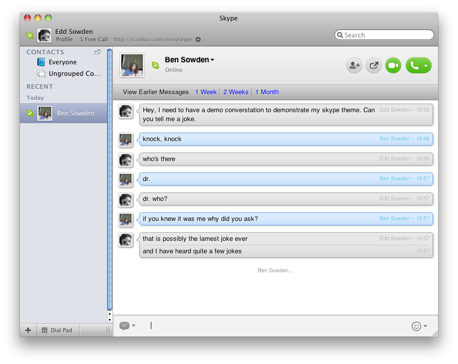

Fed up with the default Skype chat style? I decided to make my own, you can use it too.
install file which will run an installerSimples.SkypeChatStyle bundle to install
If you want to run the very latest codebase you should run a
git clone git@github.com:edds/Simples.SkypeChatStyle.git from
the folder ~/Library/Application Support/Skype/ChatStyles/.
That folder might not exist if you haven't install a custom theme before so
you might need to create it.
If that didn't make any sense to you then you should probably use one of the downloads from above.
If you run into any problems while using the SkypeChatStyle please feel free to open an issue for the bug and I will try my best to resolve it promptly.
The chat window is running a recent Webkit. As it has access to CSS3 features it seemed obvious to make use of them, such as animations, rounded corners and gradients.
If you would like to extend this theme feel free to fork the code and then send a pull request. I am particuarly interested in anyone who would be able to style the voicemail section in Skype 5 as I don't personally use that feature and don't know how it should work.

{kind=link}